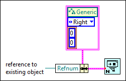

New VI Object Offset From Referenced Object
Owning Palette: VI Scripting VI and Functions
Requires: VI Scripting
This cluster provides a way to define the location input of the New VI Object function as an offset from another object. Refer to the New VI Object Location Argument example VI in the labview\examples\Application Control\VI Scripting\Creating Objects directory for a visual comparison of the three acceptable types of arguments for the location input.
You must initialize the Refnum element to a reference to a pre-existing object by using the Bundle or Bundle By Name function.

 Add to the block diagram Add to the block diagram |
 Find on the palette Find on the palette |